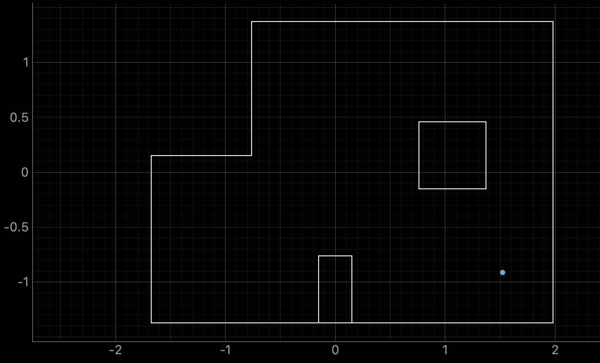
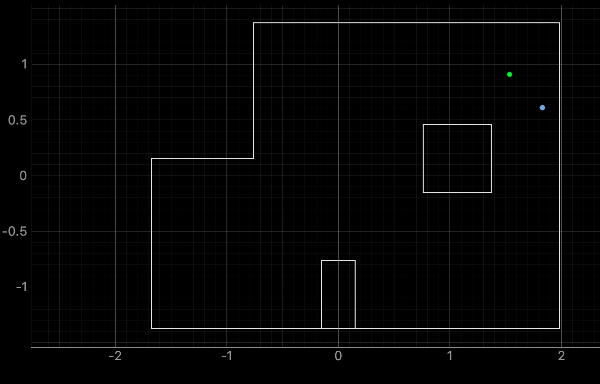
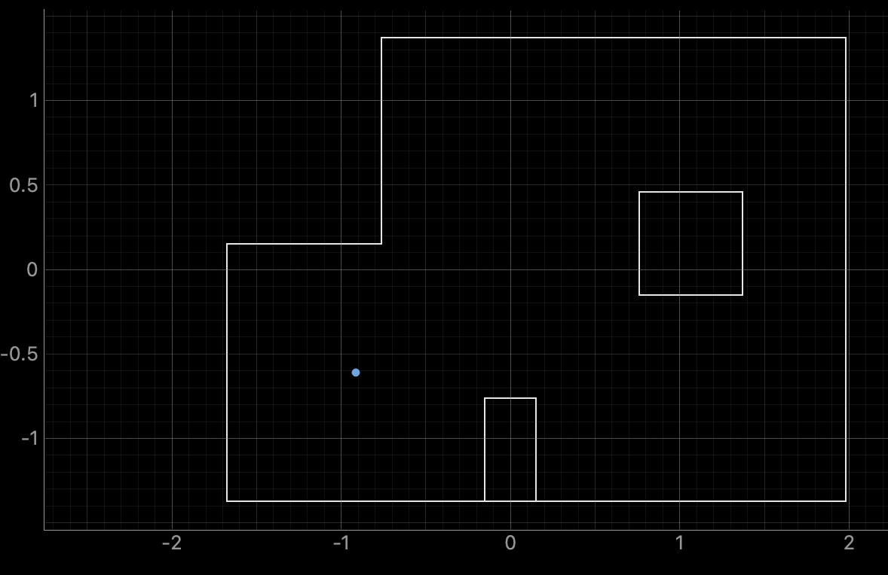
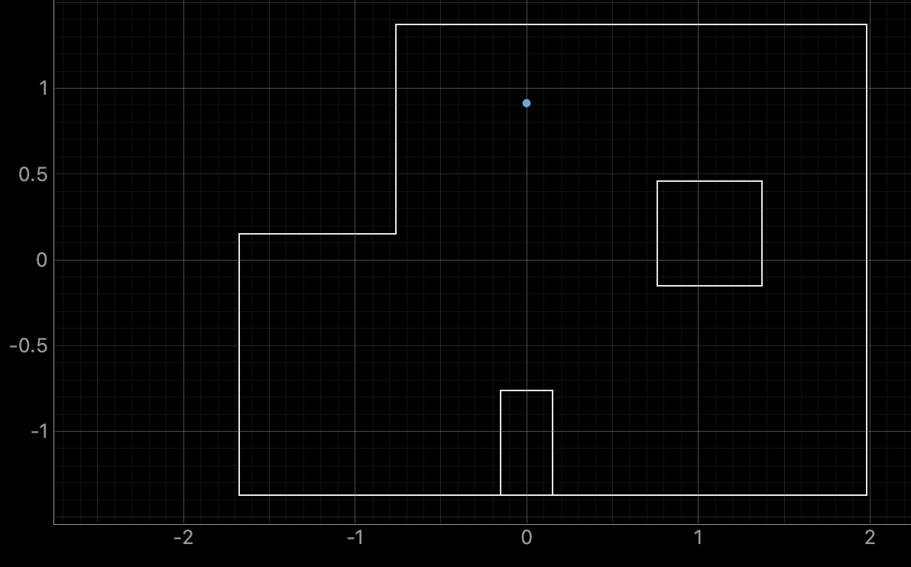

Lab 11
The purpose of this lab is perform localization with the Bayes filter on the physical robot. The Bayes filter will make a belief about where the robot is based on a full 360 degree spin at each of the locations.
Localization in Simulation
The first task of the lab was to run the simulation and ensure the provided code all worked properly. This is the corrected code from Lab 10, and the procedure is roughly the exact same. A picture of the plot is shown below to prove that the code and simulation is working correctly.

Implementation on Robot
While most of the code was provided for us, we were responsible for implementing the PID orientation control. This was taken from Lab 9, and the only thing I needed to adjust was to have it spin every 20 degrees instead of 10. However, my code from Lab 9 collects more than 18 data points, and the provided code can only handle 18 points, one from each angle. In order to fix this issue, I added a secondary post-processing step that extracts the ToF value at each of the desired angles from 0 to 340 degrees. The full code is shown below.

Tested Points on Map




Lab 11 Takeaways
I learned a lot about Bayes filter and its possible implications for my robot. I look forward to implementing it in the next lab to help with physical localization.